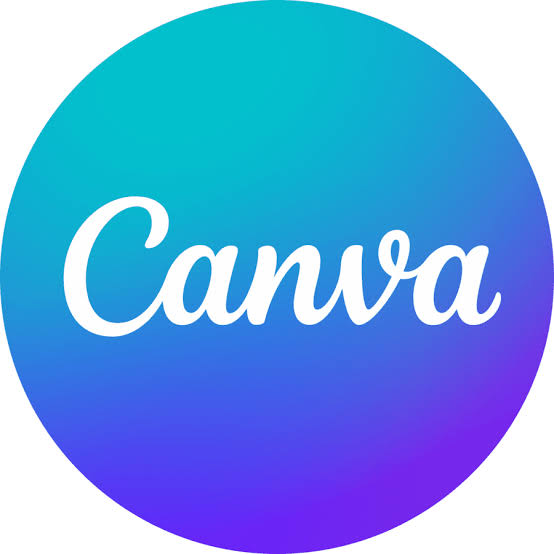

This portfolio highlights academic, professional, and leadership experiences demonstrating my ability to work collaboratively, communicate effectively, manage information purposefully, and apply technology innovatively.
Redesigned the Trinity Anglican Church website through user research, wireframing, usability testing, and information architecture analysis.
Assisted in a cloud migration initiative designed to improve efficiency and reduce operational costs for a research department.
Developed marketing materials, event promotions, and outreach campaigns to engage students and increase participation.
